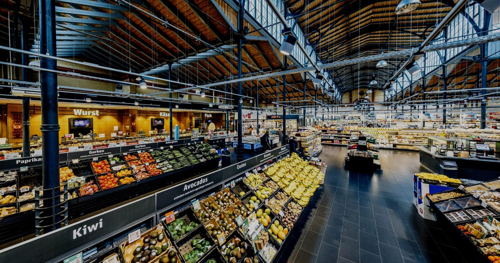

Real-time 5P insight fuels smart operations for global retail brands.
Product, People, Place, Process and Performance — unified into one execution layer across the whole store.

A lot happens in a supermarket in an hour. Shelves empty, queues build, someone spills something in aisle six, a self-checkout goes unwatched. Head office usually doesn't find out until it turns up in the numbers, well after the sale is gone.
The cameras were already there, but all they did was record. Managers dealt with problems after the customer had left, shrinkage crept up, and nobody had a clear read on how the store was doing at any given moment.
A store full of blind spots
Empty shelves and misplaced products quietly cost sales. Checkout and cashier fraud ate into margin. Long queues and safety issues put customers off. Each one had its own tool, or no tool at all, and none of it was live.
One AI layer on the cameras they already had
AIMALL brought the whole store under one system built around 5P: Product, People, Place, Process and Performance. It runs on the existing cameras. SnapX and EdgeX watch the shelves for out-of-stocks and misplacements, catch checkout fraud and safety risks, and push what they find to the right person, whether that's HQ, the store manager or a staff member on the floor.
“Now the store knows what's happening while it's happening, not the next morning.”

The results
Response efficiency reached 90%, fraud cases dropped by 55%, and conversion rose 15%. Instead of working off yesterday's reports, the chain runs on what's happening in the store right now.
See what AIMALL can do for you
Share your scenario and our team will craft a rollout plan for your stores.
Get a Solution